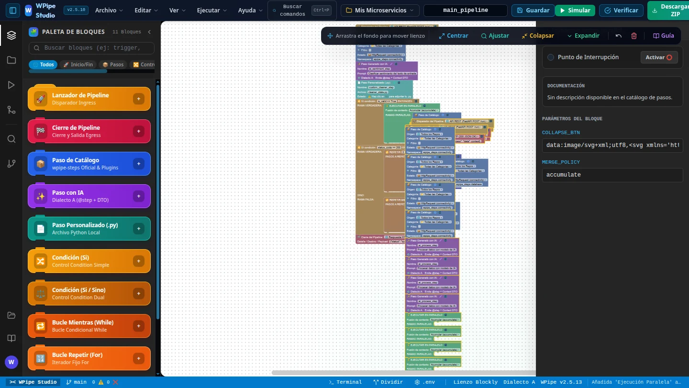

Stop spending weeks on backend plumbing. Ship in minutes.
Drag blocks on a canvas. Watch your pipeline run live. Click once and get a 36-file, test-verified Python microservice — FastAPI, WPipe DAG, Pydantic DTOs, Docker, Makefile and a Pytest suite — that passes ruff, mypy and pytest before you ever open it.

Your business logic takes an afternoon.
Everything around it takes weeks.
Every new microservice repeats the same invisible work before a single line of real value ships.
Project scaffolding
Folder layout, settings, config YAML, entrypoints, packaging.
Orchestration glue
Wiring steps, conditions, loops, parallel branches and background jobs by hand.
Typed contracts
Request, response and context DTOs that drift from the code the moment you refactor.
Docker & Makefile
Images, compose files, env vars, run and test targets that work on every machine.
Test suite
API, DTO, state and pipeline tests — the part that always gets postponed.
Lint & type fixes
Making ruff, mypy, black and isort happy across the whole codebase.
Debugging the flow
Print statements to understand which branch ran and what the context looked like.
Docs & diagrams
README, architecture diagram and work plan nobody updates after release.
From blank canvas to verified microservice
This is the real workflow: design the pipeline with blocks, then the local engine generates and verifies the whole project.
The same microservice. Two very different weeks.
Ask yourself honestly how long each of these took on your last project.
| Task | By hand (typical) | With WPipe Studio | How |
|---|---|---|---|
| Design the pipeline flow | whiteboard + code | minutes | Drag & snap blocks, real C-shaped control blocks |
| Project scaffolding (36 files) | 1–2 days | 1 click | FastAPI + WPipe DAG + config + packaging |
| Conditions, loops, parallel, background | 2–4 days | 1 click | Condition · For · While · Parallel · Background compiled to WPipe |
| Typed DTO contracts | 1–2 days | 1 click | Pydantic Context / Request / Response DTOs |
| Docker, compose & Makefile | 1–2 days | 1 click | Dockerfile, docker-compose.yml, Makefile, run_tests_docker.sh |
| Test suite | 2–3 days | 1 click | API, DTO, state and pipeline tests included |
| Lint, typing & coverage | ≈ 1 day | automatic | 6 quality gates verified before delivery |
| Debugging the flow | 1–3 days | live | Step-by-step simulation, breakpoints, context inspector |
| README, DAG diagram & work plan | ≈ 1 day | automatic | Mermaid DAG + executable work plan generated |
| Total | ≈ 2–3 weeks | ≈ minutes | Spend the saved time on the logic that makes you money |
Manual estimates are typical figures for an experienced Python developer building one microservice from scratch; your mileage will vary. Use the calculator below with your own numbers.
Four steps. Zero boilerplate.
Snap blocks together
Pick from 197 official steps, describe custom ones with AI, or attach your own .py. Control flow is visual and real.
Run it live
Green flag, breakpoints, step-over and a live context table. See exactly what every step reads and writes.
Compile to Python
The local engine emits a complete, idiomatic microservice — and preserves your hand-written code on regeneration.
Verified & deployable
Lint, typing, tests and dry-run pass before you download. make into, docker compose up, done.
A full IDE for pipelines, not a toy diagram tool
Every block maps to real, production WPipe code. What you see on the canvas is exactly what runs.
Real control-flow blocks
Condition (single & dual branch), For, While, Parallel with merge policies and non-blocking Background tasks — nested as deep as your logic needs.
Live simulation & debugger
Step through the pipeline with breakpoints (F5 / F10), payload presets for REST, Kafka, Redis and Cron, and a mutation table of the context at every step.
36-file production project
FastAPI app, WPipe DAG, Pydantic DTOs, services, utils, config YAML, Dockerfile, compose, Makefile, pyproject and a full test suite.
6 quality gates
AST syntax, ruff, mypy, black/isort, pytest with ≥ 60% coverage and a WPipe dry-run. If it does not pass, it does not ship.
197-step official catalog
Connectivity, databases, security, AI, vision and more — versioned, documented and configurable from inside each block.
AI & custom steps
Describe a step in plain language or attach your own Python file. Studio emits typed states and DTO contracts for it.
PROSmart AST merge
Regenerate after changing the canvas without losing the code you wrote by hand. Studio merges at the syntax-tree level.
PRODAG & work plan
Interactive Mermaid flowchart with pan, zoom and SVG export, plus an executable architecture work plan for your team.
Terminal, tests & .env inside
VS Code-style workspace with integrated terminal, pytest runner, problems panel, run history and a visual .env manager.
It writes the code you would have written — on a good day.
Clean, typed, readable Python on top of the open-source WPipe engine. No runtime dependency on Studio: the generated project is yours.
- Idiomatic WPipe — Pipeline, Condition, Parallel, Background.
- Typed contracts with Pydantic DTOs for context, request and response.
- Single source of config in app/config/config.yaml.
- Runs anywhere — make into, Docker or plain uvicorn.
from wpipe import Pipeline, Condition, Parallel from dto.context import PipelineContextDTO from wpipe_steps.connectivity import HttpRequest from states.ai_sentiment_step import AISentimentStep def build_pipeline() -> Pipeline: """Generated by WPipe Studio from order_risk_pipeline.wpipe""" pipe = Pipeline(verbose=True) pipe.set_steps([ HttpRequest(), AISentimentStep(threshold=0.8), Condition( expression="risk > 0.8", branch_true=[ Parallel( steps=[MySQLQuery(), SlackNotify()], merge_policy="accumulate", ), ], ), ]) return pipe
How much is boilerplate costing you?
Move the sliders with your own numbers. The savings below assume Studio removes the scaffolding, wiring, testing and debugging time you set.
Start free. Go Pro when it clicks.
One saved week pays for the license many times over.
Free
Explore the canvas and ship small pipelines.
- Up to 5 blocks per pipeline
- Condition, For & While blocks
- Real code generation & simulation with the local engine
- Browser demo mode at studio.wisrovi.dev
- Parallel, Background & AI steps
- Unlimited pipeline size
Pro
For developers who ship microservices for a living.
- Unlimited blocks and pipeline complexity
- Parallel concurrency & Background workers
- AI-described steps & custom Python steps
- Smart AST merge keeps your hand-written code
- Live debugging with breakpoints
- Works offline with a cryptographically signed lease
Team & Enterprise
Floating seats for your whole engineering team.
- Everything in Pro
- Concurrent floating seats shared by the team
- Self-service portal: release seats in one click
- One-click developer onboarding links
- IT inventory export (CSV / JSON)
Local-first. Private by design.
Your code stays home
Generation, simulation and projects run in the local engine on 127.0.0.1. No source code is uploaded.
Ed25519 licensing
Signed, machine-bound leases verified offline. No phone-home on every keystroke.
VS Code native
Open any .wpipe file as a visual editor, or use the installable web app.
No lock-in
The output is plain Python on the open-source WPipe engine. Keep it even if you stop using Studio.
Questions, answered
Is this a low-code tool that hides the code from me?
No. Studio generates a normal Python project you can read, edit, version and deploy anywhere. The canvas is a faster way to design it, not a black box.
What exactly do I get when I click generate?
A 36-file microservice: FastAPI app, WPipe pipeline (DAG), Pydantic DTOs, states, services, config YAML, Dockerfile, docker-compose, Makefile, pyproject, pytest config and a test suite — verified by 6 quality gates.
Do I need to install anything?
You can explore the canvas in your browser right away. Real code generation, real simulation and project storage run in the lightweight local engine (wpipe-engine) or the VS Code extension, so your code never leaves your machine.
What happens to code I modify by hand?
With Pro, Smart AST merge preserves your custom code when you regenerate after changing the canvas.
Does it work offline?
Yes. The Pro license is a cryptographically signed lease bound to your machine, verified locally, with a grace period for when you are offline.
Can my whole team use it?
Yes. Team and Enterprise plans use floating seats managed from a self-service portal, so seats move between developers as needed.
How did you ever build
microservices any other way?
What used to take you weeks, WPipe Studio does in minutes. Try it free today — and get Pro the moment you feel it.